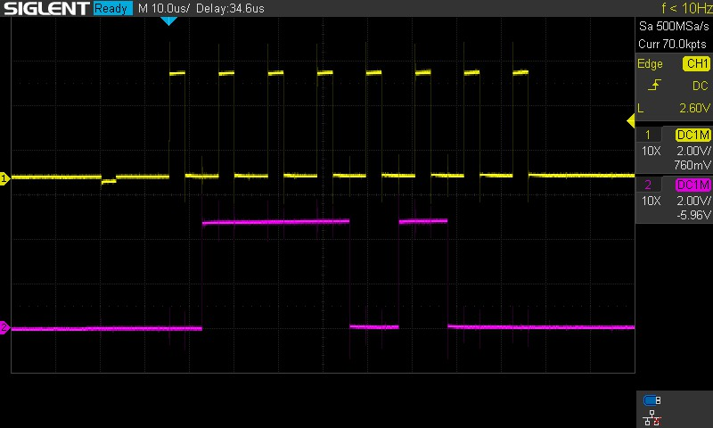

74HC595
The 74HC595 is an 8-bit shift register IC made by Texas Instruments.
Common variations of the 74HC595 include:
- *N: the IC in a dual in-line package form.
- SN*: the IC specifically manufactured by Texas Instruments.
Pinout
The pinout of the 74HC595N looks like so:

Courtesy Adafruit.
- QB: output pin.
- QC: output pin.
- QD: output pin.
- QE: output pin.
- QF: output pin.
- QG: output pin.
- QH: output pin.
- GND: ground, or reference voltage.
- QH': The same as QH. This pin is used to allow shift registers to be daisy chained.
- SRCLR: shift register clear. When this pin is pulled low, the shift register is cleared and the states of all output pins are reset.
- SRCLK: serial clock signal for SER.
- RCLK: register clock, or latch pin. When this pin is pulled high, the bits that have been shifted into the shift register are written to the output.
- OE: output enable. When it is pulled low, the output pins will function normally. When it is pulled high, the output pins are set to a high impedance state.
- SER: serial input.
- QA: output pin.
- VCC: input voltage. In the SN* variant, this is from 2-6 V with a nominal voltage of 5 V.
Programming
The 74HC595 can be used from the Arduino Core.
/* 74HC595 Example
* This sketch demonstrates usage of the 74HC595 shift register IC using an
* Arduino Uno.
*
* 74HC595 | Arduino Uno
* --------|------------
* SER | 2
* RCLK | 3
* SRCLK | 4
*
* - Note that pins 2, 3, and 4 were chosen arbitrarily. Any pin can actually be
* used as long as it can output a high or low voltage. PWM is not needed.
* - VCC and GND should be connected according to the logic level. The 74HC595
* supports 2-6 V with a nominal voltage of 5 V.
* - \overline{OE} should be pulled low.
* - \overlne{SRCLR} should be pulled high.
*/
#define SER 2
#define RCLK 3
#define SRCLK 4
#define VALUE 0b10101010
void setup()
{
pinMode(SER , OUTPUT);
pinMode(RCLK , OUTPUT);
pinMode(SRCLK, OUTPUT);
/* Set the latch low so we can shift data in. */
digitalWrite(RCLK, LOW);
/* Shift the data into the register. In LSBFIRST, the leftmost bit is QA. */
shiftOut(SER, SRCLK, LSBFIRST, VALUE);
/* Set the latch high so that the bits shifted in are pushed to QA-QH. */
digitalWrite(RCLK, HIGH);
}
void loop() {}
When QA..QH are connected to LEDs, the code results in the following output:

Under an oscilloscope, the SRCLK (yellow) and SER (purple) look like so:

For contrast, if the value were 0b00101110 instead of 0b10101010, then the SRCLK (yellow) and SER (purple) would instead look like this under an oscilloscope:

To make usage of the shift register's daisy chaining functionality, the Arduino core's shiftOut function no longer works. Instead, the SRCLK has to be explicitly pulled high and low.
/* 74HC595 Daisy Chain Example
* Same wiring at the 74HC595 Example sketch, but join QH' of the first shift
* register to SER of the second shift register and join their RCLK and SRCLK
* lines together.
*/
#define SER 2
#define RCLK 3
#define SRCLK 4
void sr_write(uint8_t ser, uint8_t rclk, uint8_t srclk, uint16_t val)
{
digitalWrite(rclk, LOW);
for (uint8_t i = 0; i < 16; i++)
{
digitalWrite(ser, (val >> i) & 1);
digitalWrite(srclk, HIGH);
digitalWrite(srclk, LOW);
}
digitalWrite(rclk, HIGH);
}
void setup()
{
pinMode(SER , OUTPUT);
pinMode(RCLK , OUTPUT);
pinMode(SRCLK, OUTPUT);
}
void loop()
{
for (uint16_t i = 0; i < 65536; i++)
{
sr_write(SER, RCLK, SRCLK, i);
delay(1000);
}
}